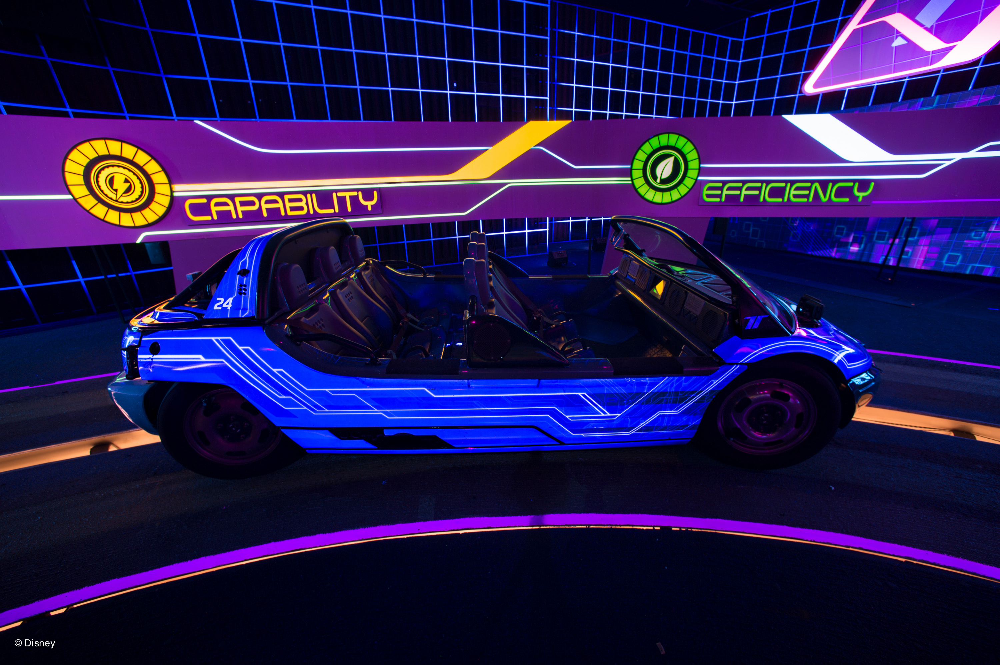

The concept for EPCOT (Experimental Prototype Community of Tomorrow) was designed initially by Walt Disney to be a city of the future.
His vision was to have approx. 100 people living on the site. When Walt Disney died, the plan was changed to turn Epcot into a park.
EPCOT is split into 4 areas - World Showcase, World Celebration, World Discovery and World Nature.
World Showcase encircles World Showcase Lagoon. it is a 1.3 mile walk around World Showcase. There are 11 countries
represented. These are China, Japan, UK, USA, Canada, France, Germany, Morocco, Norway, Mexico and Italy.

Epcot has recently had 2 new rides added. Remy's Ratatouille Adventure
has you become the size of a rat and explore the kitchen with Remy. This ride can be found in the France Pavillion. Guardians of the Galaxy: Cosmic Rewind
is the latest addition and is a fast paced roller coaster. This ride repalced Ellen's Energy Adventure, which was a slow paced family ride.